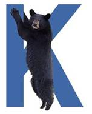

K-CAP’2005
The Third International Conference on Knowledge Capture
Banff Centre, Banff, Canada
October 2-5, 2005
Locations: MB=Max Bell Building (workshops)
DCH=Donald Cameron Hall (the main conference is in the north wing, DHC 300)
The Dining Room is in Donald Cameron Hall
The Borgeau Lounge is in Lloyd Hall
Registration Desk is in DCH 301 (Sunday: Table in MB Foyer)
Sunday, October 2nd 2005
07:00-09:00 Breakfast Buffet (Dining Room)
09:00-17:30 Workshops
(09:30-17:00) WS1:
SW-EL '05: Applications of Semantic Web Technologies
for E-learning (MB Room 105)
(09:30-17:30) WS2:
Ontology Management: Searching, Selection, Ranking,
and Segmentation (MB Room 251)
(09:00-17:00) WS3: Integrating Ontologies (MB Room 253)
09:30 (09:00 for WS3) Workshop
start
10:30-11:00 (10:45-11:10 for WS3) Coffee Break
12:00-13:30 (12:30-13:30 for WS1) Lunch Buffet (Dining Room)
15:00-15:30 Coffee Break
17:00 (17:30 for WS2) Workshop close
19:30 Evening Reception (Borgeau Lounge)
Monday, October 3rd, 2005
07:00-09:00 Breakfast Buffet (Dining Room)
08:45-09:00 Welcome and Best Paper awards (DCH Room 300)
09:00-10:00 Invited talk (DCH Room 300)
Pat Hayes, IHMC, University of West Florida
"Speaking Informally..."
10:00-10:30 Coffee Break
10:30-12:00 Information Extraction (DCH Room 300)
(paper #40) AutoFeed: An Unsupervised Learning System for Generating Webfeeds
Bora Gazen, Steven Minton
(8) Extracting Knowledge from Evaluative Text
Giuseppe Carenini
(62) Automatic Acknowledgement Indexing: Expanding the Semantics of Contribution in the CiteSeer Digital Library
Isaac Councill, Lee Giles, Hui Han, Eren Manavoglu
12:00-13:30 Lunch Buffet (Dining Room)
13:30-15:00 Interactive Knowledge Capture I (DCH Room 300)
(36) User-Centered Consultation by a Society of Agents
Georg Buscher, Joachim Baumeister, Frank Puppe, Dietmar Seipel
(58) Designing Intelligent Acquisition Interfaces for Collecting World Knowledge from Web Contributors
Timothy Chklovski, Yolanda Gil
(74) Knowledge Management for Product Maturity
Guy Boy
15:00-15:30 Break
15:30-17:00 Ontologies and Knowledge Bases (DCH Room 300)
(48) Ontology Ranking based on the Analysis of Concept Structures
Harith Alani, Christopher Brewster
(19) Knowledge Base Reuse Through Constraint Relaxation
Tomas Nordlander, Derek Sleeman, Ken Brown
(50) An Instance Mapping Ontology for the Semantic Web
Yuangui Lei
18:00-20:00 Poster Session (Dining Rooms 4&5) Cash bar and hor d’oeurves
(Presenters may get into the room anytime after 4:00pm to set up)
Tuesday, October 4th, 2005
07:00-09:00 Breakfast Buffet (Dining Room)
08:30-10:00 Information Retrieval (DCH Room 300)
(33) Browsing for Information by Highlighting Automatically Generated Annotations
Victoria Uren, Philipp Cimiano, Enrico Motta, Martin Dzbor
(55) On the Role of a User's Knowledge Gap in an Information Retrieval Process
Nenad Stojanovic
(59) Evaluating the Application of Semantic Inferencing Rules to Image Annotation
Suzanne Little, Laura Hollink, J Hunter
10:00-10:30 Coffee Break
10:30-11:30 Interactive Knowledge Capture II (DCH Room 300)
(52) Collaborative Knowledge Capture in Ontologies
Pat Hayes, Thomas Eskridge, Raul Saavedra, Thomas Reichherzer, Mala Mehrotra, Dmitri Bobrovnikoff
(61) Estimating Similarity among Collaboration Contributions
Kenneth Murray, John Lowrance, Doug Appelt, Andres Rodriguez
11:30-15:00 Lunch (boxed) and hike (optional)
15:00-16:00 Panel Discussion (DCH Room 300)
16:00-16:30 Break
16:30-18:00 Dialog and Elicitation (DCH Room 300)
(41) Collecting Paraphrase Corpora from Volunteer Contributors
Timothy Chklovski
(30) Bringing Order into Bayesian Network Construction
Eveline Helsper, Linda van der Gaag, Ad Feelders, Willie Loeffen, Petra Geenen, Armin Elbers
(46) Matching Utterances to Rich Knowledge Structures to Acquire a Model of the Speaker's Goal
Peter Yeh, Bruce Porter, Ken Barker
19:30 Evening Banquet (with mystery speaker)
Wednesday, October 5th, 2005
07:00-09:00 Breakfast Buffet (Dining Room)
09:00-11:00 NLP: Knowledge Capture from Text (DCH Room 300)
(38) Finding New Terminology in Very Large Corpora
Joachim Wermter, Udo Hahn
(16) Automated Story Capture from Conversational Speech
Andrew Gordon, Kavita Ganesan
(43) Indirect Anaphora Resolution as Semantic Path Search
James Fan, Ken Barker, Bruce Porter
(66) Document Annotation and Ontology Population from Linguistic Extractions
Florence Amardeilh, Philippe Laublet, Jean-Luc Minel
11:00-11:30 Break
11:30-12:30 Invited talk (DCH Room 300)
Carole Goble, University of Manchester, UK
"The Montagues and the Capulets: Part II"
12:30 Conference Close (DCH Room 300)
